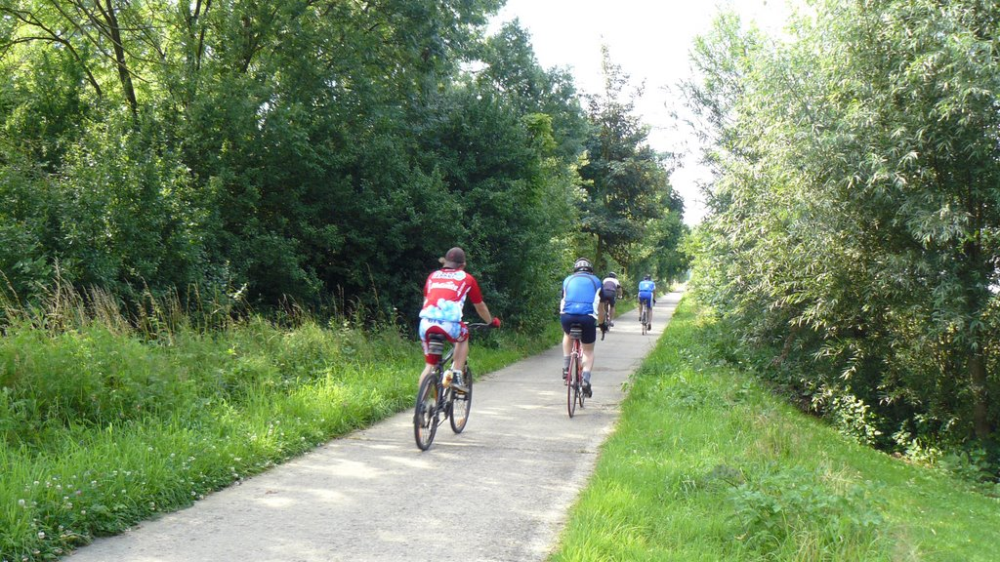

Halen ligt op de grens van Haspengouw, Hageland en Kempen. Dat maakt dat elk kerkdorp, Halen, Zelem, Zelk of Loksbergen, een andere belevenis biedt.
Met de fiets kom je langs de mooiste plekjes van Halen. Ook staat Halen bekend om de ‘Slag der Zilveren Helmen’
(12 augustus 1914). Leer alles over WO I in het museum Slag der Zilveren Helmen. Zelem heeft een mooie oude dorpskern maar vergeet ook niet het kasteeldomein van
Sint-Jansberg een bezoek te brengen. Vertrekkend vanuit het streekmuseum Reinvoart in Loksbergen kan je prachtige wandelingen maken door de
holle wegen en fruitboomgaarden. De volledige lijst van de Halense monumenten hier opsommen is niet onze bedoeling. Bij onze toeristische informatie tref je alvast de Monumentenfolder aan en vind je tal
van pareltjes, waaronder ook Limburg 1914-1918: Dit zijn wij, 44 Limburgse helmen om er ééntje te noemen.
Maar hou je ook van geheimzinnige kloosters, unieke musea, pittoreske waterlopen, voorjaarsbloesems of wil je
‘t Schulensmeer, en de wijngaarden in Halen ontdekken? Dit kan allemaal. Voor fiets- of wandeltochten is dit de locatie bij uitstek.
Diverse uitgestippelde routes passeren er voor de deur.





-
Klompenwandeling Loksbergen
-
Holle wegen in Hagelandse heuvels, Loksbergen-Zelk
-
Vallei van de Zwarte Beek – Zelem & Meldert
Fietsen
- Fietsroute Ontdek Halen en Rondom Halen
- Fietsroutenetwerk Limburg
- Fietsroutenetwerk Hageland
- Geologische fietsroute Halen
- Mountainbikenetwerk West-Limburg
- Fietsen gratis beschikbaar – E Bikes mits betaling
Dichtstbijzijnde bezienswaardigheden
- Golfclub Millenniumgolf: 14 km
- Hasselt Marktplein: 15 km
- Natuurgebied Platwijer: 15 km
- Plopsa Indoor Hasselt: 16 km
- Flanders Nippon Golf & Business Club: 17,5 km
- Winge Golf & Country Club: 18 km
- Wijnkelder Kluisberg: 4km
Restaurants en markten op wandelafstand